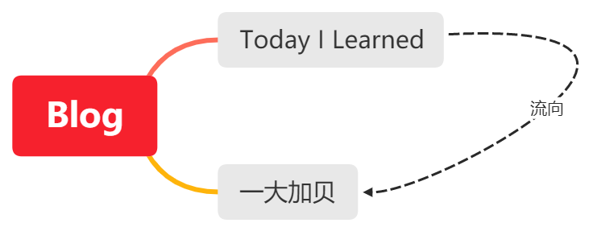

Table of Contents
+ date = '2021-01-10T10:59:20+08:00' description =
'构建自己的知识体系' keywords = ['体系', '知识', '构建', 'Wiki', 'Note',
'Blog'] tags = ['知识体系'] title = '构建知识体系' slug =
'knowledge-structure' +
我需要一个「知识体系」，帮助我获取外界的信息，整合归纳信息，构建一个可复用的知识结构。这并不是一朝一夕就可以完成的事情，形成这样一个知识体系需要足够的知识储备和对于学习的理解。曾经的我想要一下子得到这样的东西，现在却不这么想了。从 reuixiy1 那里我获得了某种体会：
作为学习者，我们时常会担忧自己知识的广度和深度，但其实我们担忧的是自己所在的社会高度，因为学习本身只是一种好奇心罢了，好奇心怎么会让人担忧呢？至于深度和广度，其实应该跳出横纵两维去思考，以非方向的面和体去思考，不断地学习改进扩展是因为自己想要将其全面完整，而不是以有涯随无涯。好奇心本身是任意无方向的，为之指定方向是反生命非自由的，而方向是否与历史同向是未知非自己可控的，与否更多的只是巧合幸运。跟随好奇心去做自己喜欢的事，而不去担忧自己所在的高度。
1 重要观点
- 知识之间的紧密联系
- 查找/搜索方便
- 公开可访问
- 追求极简，纯文本保存，可多平台迁移（如果某种格式只能使用在某个平台，绝对不使用此格式保存我的知识体系内容）
- 倾向于 self-hosted
2 现有的努力
其实摸索的过程本身就是零碎且不完整的，我没有必要为了追求理想中的完整而抛弃一些重要的东西。
2.1 2021-10-17
选择使用 org-mode 组织自己的文档。
2.2 2021-06-03
正在寻找
2.3 2021-02-27

Figure 1: blog + TIL
2.4 2021-01-27
- Blog + Obsidian
- 使用博客构建体系，使用 Obsidian 建立文档联系
- flomo 记录「问题」，然后每天选择一个时间，把这些问题放到博客的每周问题总结里
2.5 2021-01-27 之前的方案
Wiki，Note，Blog 三个体系划分知识，分类太多，不好专注。这三种形式，知识之间的链接程度不同，在这三者来回跳跃容易乱掉。
一、Wiki
Vuepress 构建，主要用于构建技术领域的结构框架，一开始的领域涉及算法和数据结构、计算机系统原理、数据库原理、前后端开发指南、分布式技术、编程语言、网络基础、操作系统、安全、其他（其中含有：开源许可证、生活、数学、学习、科技、网站、工具、数据分析）。
现在 Wiki 已经不再存在，因为它太过复杂，不符合当初对它的期待-–—条理清晰、易于查找、访问方便。
条理清晰。知道自己需要的知识在哪些地方是非常重要的。在日后查找时，一目了然。
易于查找。这点和第一个有些重复，不过侧重点不同。这里的“易”指的是，文档的顺序编排上是值得考量的。不同主题的放在不同文件夹，相同主题的也要遵循一定的规律存储。而且，一个好的目录能够成就一个好的 Wiki 知识库。目录的重要性不言而喻，它是以上两点的主要表现对象。有了它，条理清晰没问题，易于查找也是肯定的。
访问方便。这一点目前对我来说不成问题，以后也不会成为难题。因为 GitHub 在国内的访问速度不是很理想，如果不能科学上网，使用 GitHub 如食鸡肋。
二、Note
同样 Vuepress 构建，用于记录书影音笔记，从别处收集的文章。还有一个页面用于收集获取书影音的方法。
现在 Note 已经去除 read，watch，listen 文件夹分类。改为大类分类：艺术（arts）、设计（design）、纪录片（documentary）、文学（literature）、电影（movies）、音乐（music）、要学习的人（person）、诗歌（poems）、自我成长（self）、剧集（series）、社会科学（social-science）、舞台剧（stage-show）、技术（tech）。
经过此次分类，对于内容体系的划分有了更深一步的理解。
三、Blog
Hugo 构建，主要记录生活随笔，想写些深度技术内容。
现在，博客是我的知识体系的最终归宿。以标签为索引，目标是化繁为简。我明白知识体系构建的过程一定是从简单到复杂，我要让复杂变得简单，但又不仅仅是简单，复杂也包含在其中。
可以类比老子的《道德经》，一生二、二生三、三生万物。
3 他山之石
3.1 Digital Gardening2
3.3 Shane Robinson 的想法16
- 为了在未来保持尽可能多的开放格式和互操作性，统一内容和文件格式标准。
- 对于每个文档中为数不多的内部/外部链接，使用标准的
[text](link)语法并没有那么不方便（尤其是使用快捷键）。 这确保我现在和将来可以使用任何 SSG 和/或使用任何标准 Markdown 转换器提供任何 .MD 文件。 - 当我完成文档时，我必须手动将标签添加到 Frontmatter "标签"数组。 每个标签增加 2-3 秒，但保证当通过 SSG 发布时，我将在文件之间建立分类连接。
- 将 Frontmatter 放在每个文件的顶部还可以保证未来的互操作性、转换和通过 SSG 托管。 使用 TextExpander 使这变得非常简单和快速。
3.4 创建知识体系17
一、什么是知识体系
学习新知识时，首先不是去解决问题、学习细节，而是需要了解知识的全貌，形成框架。让自己学习的所有内容、碰到的所有问题，都没有逃出自己的框架，此时的学习是最有效的。
老鸟学习一门编程语言的语法，需要多长时间？
大约只要几个小时最多几天，因为每种语言都有共同之处，在现有知识体系能够套用的情况下，学习成本极低。
二、如何检验知识体系
碰到问题很正常，但解决问题需要依赖自己的知识体系，将问题定位在框架的某一处，通过相关知识点来推算、思考，最终解决问题。
*解决问题的能力越高，你的知识体系越完整*。
三、如何建立知识体系
- 不要死抠细节
- 尽早尝试开发完整的项目
- 看问题要看本质
- 勤敲代码
- 多总结
3.5 Note-taking18
The main purpose of taking notes may be to implant the material in the mind, the written notes themselves being of secondary importance.